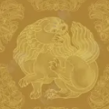
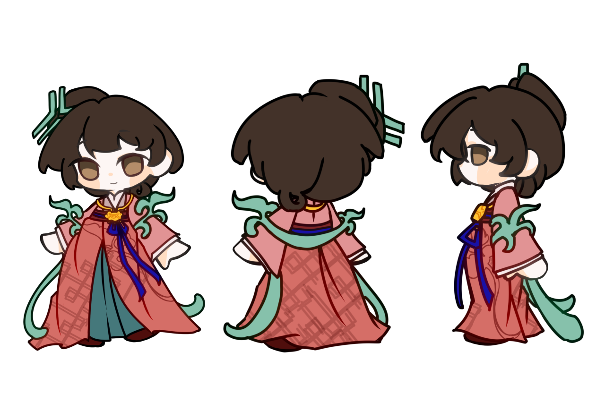

目前，非遗元素在国内时尚皮具箱包设计实践中呈现出多元化和融合性的发展趋势。其中，传统刺绣元素与箱包皮革表面的融合是较为常见的非遗元素应用形式之一，构建了箱包产品与受众之间的文化审美认同。然而，经过研究发现，部分面临传承方式僵化，宣传媒介单一，传承人才流失的非遗元素依旧在时尚设计中被忽视，非遗传统纹样和图案就是其中一部分。调查显示，我国本土对非遗传统纹样的活化运用和商业价值的挖掘能力远低于LV、Celine等外国品牌，这显示了我国在传统纹样的活化运用和价值重塑方面有所欠缺。
基于此，本团队深入研究了传统艺术作品中的纹样设计和图案元素，借助“非遗纹样的时尚化表达定位——产品服务设计——商业模式构建”的思路体系，力图通过对传统纹样的创新设计和活化利用，融入现代科技，打造符合Z世代时尚审美，具有市场竞争力的时尚单品和文化产品。同时，将大数据平台与非遗纹样设计结合，打造非遗基础纹样数据库，搭建非遗纹样智能设计平台，提高非遗纹样活化利用效率，实现中华传统纹样的创造性转化创新性发展。

瑞兽纹是中国传统装饰纹样的核心门类，以龙、凤、麒麟、狮子等神话或祥瑞动物为原型，通过夸张变形的艺术手法，承载辟邪、镇宅、祈福、招财等美好寓意，贯穿商周青铜、汉唐陶瓷、明清服饰建筑等各时代，是华夏吉祥文化的典型符号。

以忍冬花（金银花）为原型的卷草纹样，茎蔓缠绕、花形简约，线条柔和婉转，因忍冬 “凌冬不凋”，寓意坚韧永恒、福寿绵长。受佛教文化影响深，多见于石窟壁画、造像装饰，后演变为卷草纹雏形。

这款帆布包以传统忍冬纹为设计核心，将千年丝路的艺术韵律融入日常。

这款围巾以源自敦煌石窟的忍冬纹为核心设计元素，将千年丝路文明的艺术基因与现代审美巧妙融合。

这款盲盒娃娃以 Q 版软萌造型重塑潇湘妃子的形象：乌黑的双麻花辫垂落肩头，发间点缀着冰裂纹发钗，冰裂纹的几何线条利落清冽，恰如黛玉孤高自许、不与世俗同流的品性；发梢的金色圆饰，又添了几分精致灵动。她身着淡蓝交领短衫，袖口与衣摆晕染成柔粉，腰间系着同色系蝴蝶结，配色清雅如潇湘馆的翠竹。